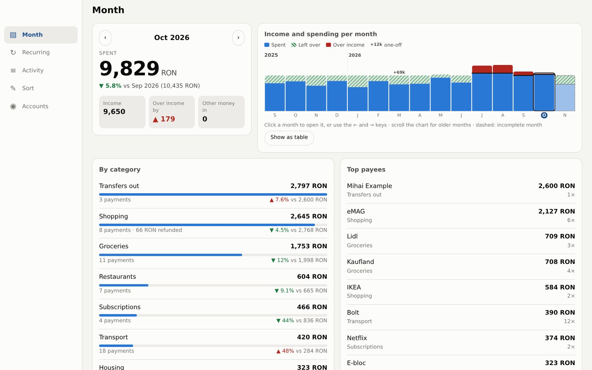
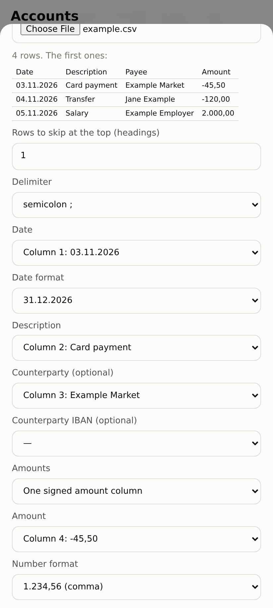

毎日の道具
Spendosaurus
最初の見積もりから最後の分割払いまで、家族の大きな出費を計画。
お金がどこへ行き、毎月何を払っているのかを、自分の銀行口座から、自分のサーバーで確認できます。
Open Banking Hub はセルフホスト型で読み取り専用です。各自が自分専用のコピーを動かします。

Open Banking Hub（略して Bank Hub）は、自分の銀行口座を読み取り専用で見られるセルフホスト型ツールです。Enable Banking の PSD2 API で取引を取得し、自分のマシン上の SQLite ファイルに保存して、「お金はどこへ行ったのか」「定期的に何を払っているのか」という2つの問いにしっかり答えます。
口座データを読むだけで、支払いを行えるコードは一切含みません。スマートフォンとノートパソコン向けのプライベートなアプリは登録した端末にすべてを表示し、読み取り専用の MCP サーバーは、AI アシスタントが情報を伏せた表示から質問に答えられるようにします。カテゴリ、金額、既知の店舗は見えますが、人の名前、IBAN、支払いの摘要は決して渡しません。
Revolut、ING Romania、BRD で開発・テストしており、Enable Banking が対応する銀行なら動作するはずです。Enable Banking の制限付き本番モードは、自分の口座なら無料です。Open Banking Hub は Enable Banking やいずれの銀行とも提携していません。
スクリーンショットはすべて、アプリ内蔵のデモによる架空のデータです。ノートパソコンでは画面の幅を生かし、サイドバー、1行ずつ確認できる表、そしてリストの横に開く支払いや支払先を表示します。






Open Banking Hub は Python で書かれ、FastAPI と SQLite を使います。常時稼働する小さな Linux マシンで動き、Docker Compose と amd64・arm64 向けに公開されたイメージ、または systemd ユニットで運用できます。スマートフォンからは Tailscale などのプライベートネットワーク経由でアクセスし、公開インターネットには出すべきではありません。外貨の金額はルーマニア国立銀行の日次レートで換算します。夜間のバックアップは整合性を確認し、restic による暗号化した外部コピーも任意で作れます。プロジェクトは MIT ライセンスのオープンソースです。